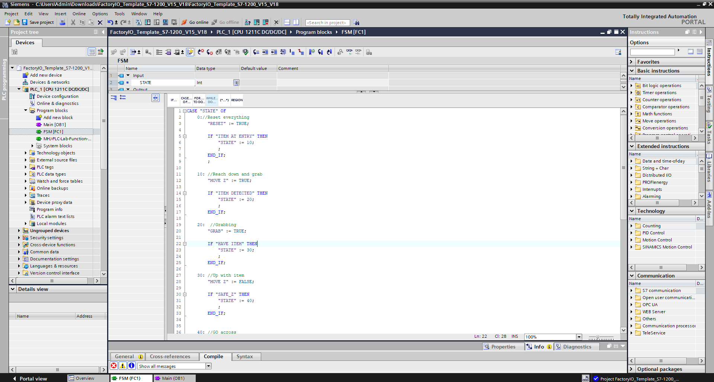

View Photos
2‑Axis Pick‑and‑Place — FSM in SCL
- Implemented an FSM in SCL within a function block to sequence a 2‑axis pick‑and‑place cell.
- Defined clear state transitions, handshakes, and permissives across axes and actuators.
- Added ladder logic for E‑stop and manual start/stop to meet safety and operational needs.